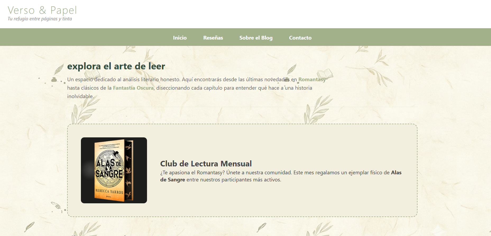
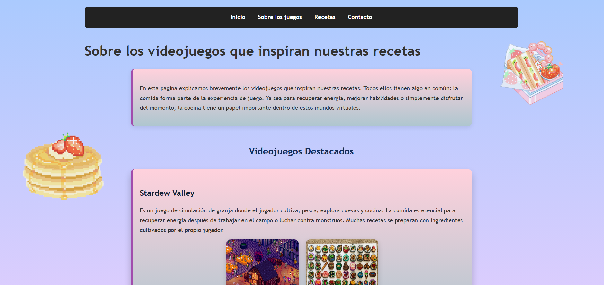

Página web creada como proyecto final para la asignatura de Lenguaje de Marcas.
Tecnologías usadas: HTML5, CSS3
Ver proyecto
Este fue mi primer proyecto web completo. Es una página temática dedicada a recrear y recopilar recetas inspiradas en diferentes videojuegos.
Tecnologías usadas: HTML5, CSS3
Visitar Web